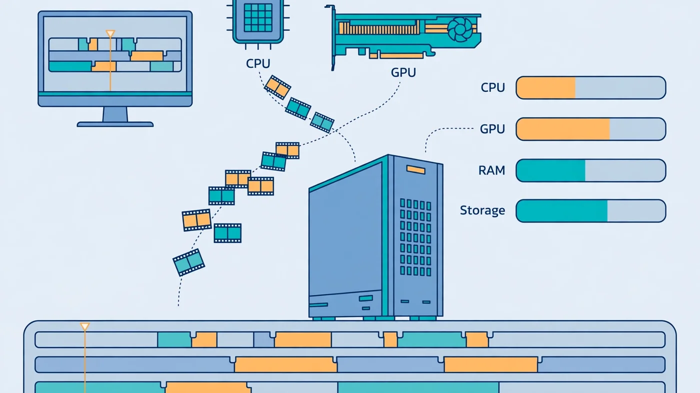

Video Editing Bottleneck: Is Your CPU or GPU Limiting Exports?
The short answer to the video editing bottleneck question is that there is no single culprit: the CPU, the GPU, the RAM and the storage all take turns being the limit, and which one is holding you back depends on the app you edit in and the job you are doing. A timeline that stutters while you scrub and an export that crawls for an hour are usually two different bottlenecks. This guide explains what each part does, how Premiere Pro and DaVinci Resolve split the work differently, and the five-minute test that names your real limit.

Video Editing Bottleneck: The Short Answer
A video editing bottleneck is whichever part of your PC cannot keep up with the editing job in front of it — and unlike gaming, that part changes from minute to minute. In a game the graphics card is usually the limit. In an edit, the work is spread across four components at once: the CPU decodes footage and runs the timeline, the GPU accelerates effects, colour grading and hardware encoding, the RAM holds previewed frames, and the storage streams high-bitrate footage off the drive. If any one of them falls behind, the whole workflow slows down.
The practical version: if your timeline stutters but exports finish quickly, the limit is usually decoding or storage. If playback is smooth but exports crawl, the limit is usually the encoder — the CPU on software encoding, or the GPU on hardware encoding. And if everything is slow at once, check the RAM first, because full memory pushes the work onto the disk. Our CPU vs GPU bottleneck guide explains the same read-the-usage-bars logic for games, and it works exactly the same way here.
Why a Video Editing Bottleneck Moves Around
Editing is not one task. At least four different jobs run inside your editor, and each one stresses a different component. Decoding turns compressed camera files into frames — mostly CPU work unless hardware decoding is on. Effects and colour work run on the GPU. Previewing holds frames in RAM so playback stays smooth. Scrubbing a 4K timeline pulls footage off the drive as fast as storage allows.
That is why generic gaming advice misleads editors: a faster graphics card does nothing for a timeline stuttering on H.265 software decoding, and a faster CPU does nothing for a Resolve grade waiting on VRAM. Match your symptom below, then confirm it with the test later in this guide.
- Timeline stutters when scrubbing, exports are fine: decoding or storage — the codec, the drive, or hardware decoding off.
- Playback drops only with grades or heavy effects: GPU compute or VRAM.
- Previews in After Effects or Fusion crawl: RAM — the preview cache has run out of memory.
- Exports are slow while the timeline plays fine: the encoder — CPU on software encoding, GPU on hardware encoding.
What the CPU Does in Video Editing
The CPU is the workhorse of the edit. It decodes footage into frames, runs the timeline logic, processes audio, handles most non-accelerated effects, and does the encoding whenever software encoding is selected. It also suffers most from difficult codecs: H.264 and especially H.265 (HEVC) from phones, drones and mirrorless cameras are heavily compressed, so decoding them eats cores. That is why phone footage can stutter where ProRes plays smoothly — the codec, not the resolution, is the load.
Two CPU details matter more than the core count on the box. First, strong single-thread performance still decides how responsive the timeline feels, because much of the timeline logic does not split neatly across cores. Second, modern Intel chips with integrated graphics unlock Quick Sync, a dedicated media block that hardware-decodes H.264 and H.265 and takes a huge load off the CPU. Chips without integrated graphics, such as Intel "F"-series processors, lose that path entirely. Our best GPU for i5-12400F guide covers that trade-off from the pairing side.
What the GPU Does in Video Editing
The GPU takes over the jobs that split into thousands of small parallel tasks: colour grading, noise reduction, stabilisation, blur and sharpen effects, Fusion composites, and hardware encoding at export. In Premiere Pro this runs through the Mercury Playback Engine — CUDA on NVIDIA, OpenCL on AMD, Metal on Apple Silicon. In DaVinci Resolve the GPU does even more: nearly the whole colour and effects pipeline lives on the graphics card.
VRAM is the GPU's own memory, and in editing it matters as much as raw speed. Every frame the GPU works on sits in VRAM, along with the grading nodes, noise-reduction models and preview cache. When VRAM fills up, the app spills work back to system RAM or the disk and playback drops. For 1080p with light effects, 8GB of VRAM is workable; for 4K timelines with grades and noise reduction, 12GB is the sensible minimum and 16GB is the safer buy. Our VRAM guide covers how much memory each resolution needs.
Hardware encoding is the GPU's other big job: modern NVIDIA cards carry NVENC, AMD cards carry their own encoder, and Intel integrated graphics carry Quick Sync. When hardware encoding is enabled for an H.264 or HEVC export, the dedicated encoder does the compression and exports finish far faster than on software encoding. A few export settings still use software encoding even when hardware encoding is on — two-pass encoding is the common one — so if an export suddenly crawls, check the settings before blaming the card. Our low GPU usage guide explains the same pattern from the gaming side: a GPU waiting at low usage is a symptom, not the problem.
RAM: The Bottleneck Video Editors Forget
RAM is the quiet bottleneck in video editing, because its failure looks like a CPU or GPU problem. While you edit, the app holds decoded frames in RAM — the preview cache — so playback stays smooth. When RAM fills up, the app falls back to caching on the disk, which is far slower, and the timeline stutters even though the CPU and GPU have headroom. After Effects and Fusion are the worst offenders — a RAM preview of a long composition can swallow tens of gigabytes on its own.
Both Adobe and Blackmagic publish 16GB as the minimum for Premiere Pro and DaVinci Resolve, and that is enough for 1080p editing with light effects. For 4K timelines, multicam work, Fusion or After Effects, 32GB is the sensible baseline — Blackmagic itself lists 32GB when Fusion is in use. If you are choosing between a faster CPU and more RAM, the RAM usually wins first: a machine with 16GB that is constantly full feels slower than one with 32GB and a mid-range processor. Our RAM bottleneck guide and 16GB RAM guide cover capacity and channel checks in detail.
Storage and Codecs: Why 4K Footage Stutters on the Timeline
Storage is the bottleneck editors blame last and should check first. Scrubbing a timeline means streaming footage off the drive in real time, and high-bitrate 4K footage needs far more throughput than a game loading a level. A hard drive can hold the files, but it cannot stream them fast enough for smooth scrubbing; a SATA SSD is a big step up, and an NVMe SSD is the comfortable baseline for 4K work. A nearly full drive also slows down, so keep headroom on every drive.
Codecs decide how hard the drive and the CPU have to work together. H.264 and H.265 are delivery codecs: small files, heavy decoding. ProRes and DNxHR are editing codecs: large files, light decoding. That trade-off is why professionals use proxies: a proxy is a light, easy-to-decode copy of each clip that you cut on, and the final export still comes from the full-quality originals. If your machine struggles with H.265 from a phone or drone, proxies are the reliable fix — far cheaper than a new CPU. Our SSD vs HDD guide covers what each drive type really does to performance.
Premiere Pro: A CPU-First App
Premiere Pro leans on the CPU more than any other major editor. Timeline playback, most effects and software encoding all run on the processor, and more cores mean snappier scrubbing and faster exports when hardware encoding is off. The GPU accelerates a specific set of effects — Lumetri colour, Warp Stabilizer, blurs and transitions — and takes over encoding when hardware encoding is enabled. But the CPU remains the primary limit in most Premiere workflows, so a Premiere builder should spend on the processor and RAM first and treat the graphics card as second priority.
Before buying anything, check the two settings Adobe itself documents. In Project Settings, the renderer should be Mercury Playback Engine GPU Acceleration, not Software Only. In Preferences, under Media, hardware-accelerated decoding and encoding should be switched on, then restart the app. Adobe's own guidance is that H.264 and H.265 playback improves with hardware decoding enabled. If those settings are wrong, the CPU does work the GPU could have taken over, and no hardware upgrade fixes a checkbox.
DaVinci Resolve: A GPU-First App
DaVinci Resolve flips the balance. Colour grading, noise reduction, optical flow and Fusion composites all run on the GPU, so the graphics card — and especially its VRAM — is the first limit in most Resolve timelines. Blackmagic's own minimum for Windows is 16GB of system RAM and a GPU with at least 2GB of VRAM, rising to 32GB of RAM when Fusion is in use — minimums for launching the app, not for comfortable 4K work.
Resolve also rewards VRAM more than any other editor. A 4K timeline with several noise-reduction nodes, HDR grading and Fusion titles can fill 8GB of VRAM before the grade is finished, and then playback drops. If you edit in Resolve, treat 12GB of VRAM as the minimum for serious 4K work and 16GB as the safer buy. One more detail: a few hardware-accelerated formats are reserved for the paid Studio version, so check which formats your licence covers.
How to Find Your Bottleneck in Five Minutes
Guessing wastes money. Open Task Manager on Windows (Performance tab) or Activity Monitor on a Mac, play the heaviest part of your timeline, then watch the four graphs for a minute. Then start an export of the same timeline and watch them again — the same method our bottleneck check guide uses for games.
- CPU near 100%, GPU idle: the CPU is decoding in software — enable hardware decoding, use proxies, or upgrade the processor.
- GPU near 100% when grading or adding effects: the graphics card is the limit — lower the playback resolution or upgrade the GPU.
- RAM nearly full, disk busy: the preview cache has spilled to disk — add RAM or clear the media cache.
- Disk near 100% while scrubbing: storage is the limit — move media to a fast SSD or use proxies.
- Everything low but playback still stutters: check the settings — Software Only renderer, hardware decoding off, or playback resolution too high.
Run the export test separately, because the export bottleneck is often different from the timeline one. If the CPU is pinned during export and the GPU idles, you are on software encoding — switch to hardware encoding if your format supports it. If the GPU is pinned and the CPU waits, a faster GPU would shorten the export. If both sit low, the export is waiting on the disk or on a setting such as two-pass encoding. Our good bottleneck percentage guide explains how to read these numbers without panicking over a single high reading.
Fixing the Right Bottleneck: Free Fixes Before Upgrades
Most video editing bottlenecks have a free fix — work through these in order, testing playback after each change:
- Turn on GPU acceleration: renderer set to GPU Acceleration, hardware decoding and encoding enabled, then restart.
- Lower the playback resolution: editing at half or quarter resolution changes nothing about the export, but cuts the decode and GPU load dramatically.
- Use proxies for heavy codecs: cut on light proxy files, export from the originals.
- Clear the media cache and move it to a fast SSD: a bloated or slow cache drive stutters timelines by itself.
- Close the browser and background apps: dozens of open tabs eat RAM and CPU the editor needs.
- Update the GPU driver — the Studio driver on NVIDIA, the current driver on AMD and Intel — because editing apps depend on driver features that change between releases.
If the free fixes do not move the needle, the test above tells you which upgrade to buy. A part bought for the wrong bottleneck is money that fixes nothing.
Upgrade in the order the test points to: Premiere Pro wants CPU first, then RAM to 32GB; DaVinci Resolve wants GPU and VRAM first; After Effects wants RAM first. In every app, moving media from a hard drive to an NVMe SSD is the cheapest win. Do not upgrade the GPU to fix a CPU problem, or the CPU to fix a VRAM problem — the most common wasted purchase is a flagship card for a machine whose real limit is a processor decoding H.265 in software. Run the pairing through the PC Bottleneck Calculator at the resolution and workload you actually edit at, and plan the rest with our PC upgrade checklist before you spend.
Free PC Bottleneck Calculator — Estimate CPU and GPU balance for your resolution and workload: check whether your CPU, GPU, RAM or storage is the slow half of your edit on the PC Bottleneck Calculator (see its methodology page) before you buy a part for video editing.
Conclusion
A video editing bottleneck is rarely just the CPU or just the GPU — it is whichever part your current job leans on hardest, and it moves between decoding, effects, previewing and exporting. Premiere Pro is CPU-first, DaVinci Resolve is GPU-first, RAM decides whether previews stay smooth, and storage decides whether 4K footage scrubs cleanly. The five-minute usage test names the real limit and the free fixes solve most of it. Find the part that is actually falling behind, fix that one first, and the timeline and the export both get faster.
Frequently Asked Questions
Is CPU or GPU more important for video editing?
It depends on the app you edit in. For Premiere Pro and After Effects, the CPU — plus plenty of RAM — matters most, because the processor handles decoding, most effects and software encoding. For DaVinci Resolve, the GPU and its VRAM matter most, because colour grading, noise reduction and Fusion run on the graphics card. In both cases RAM and fast storage set the ceiling, so a balanced machine beats a lopsided one.
Does Premiere Pro use CPU or GPU?
Premiere Pro uses both. The CPU decodes your footage, runs the timeline, handles audio and does software encoding, while the GPU accelerates playback and effects through the Mercury Playback Engine and takes over encoding when hardware encoding is enabled. If the renderer is set to Software Only, or hardware decoding is switched off, the CPU does work the GPU could have taken over — check Project Settings and Preferences before blaming your hardware.
Why is my GPU usage so low when editing video?
Low GPU usage while editing usually means something else is the limit: the CPU is busy decoding heavy H.264 or H.265 footage, RAM is full and the app is caching to disk, or the export is running on software encoding. It can also mean GPU acceleration is simply switched off in the app settings. Watch CPU, GPU, RAM and disk usage together while you play the timeline — the part sitting near full load is the bottleneck, and a GPU waiting at low usage is the symptom, not the problem.
Is 16GB of RAM enough for video editing?
16GB is the minimum Adobe and Blackmagic publish for Premiere Pro and DaVinci Resolve, and it is enough for 1080p editing with light effects. For 4K timelines, multicam work, Fusion or After Effects, 32GB is the sensible baseline — Blackmagic itself lists 32GB when Fusion is in use. If RAM fills up during a preview, the app falls back to slow disk caching and the timeline stutters no matter how fast your CPU and GPU are.
Does a faster CPU reduce export time more than a faster GPU?
It depends on the encoder. With software encoding, the CPU does the work and more cores usually mean a faster export. With hardware encoding, the GPU's encoder does the heavy lifting, so a faster graphics card helps more — but the CPU still has to decode the footage and feed frames to the encoder, so a weak processor can still hold the export back. Test your own project's export path: if the CPU is pinned and the GPU idles, a faster CPU helps; if the GPU is pinned, a faster card helps.
Sources
Official documentation referenced in this guide:
- Adobe: Premiere Pro System Requirements (minimum and recommended specifications, including RAM)
- Adobe: Optimize H.264 and H.265 Playback in Premiere Pro (hardware-accelerated decoding and encoding, Intel Quick Sync)
- Adobe: Enable Hardware Accelerated Decoding in Premiere Pro (settings location and restart requirement)
- Blackmagic Design: DaVinci Resolve Minimum System Requirements (RAM, GPU and VRAM for Windows, macOS and Linux)
- Intel: Locate and Resolve CPU-GPU Bottlenecks (per-core CPU usage vs GPU usage patterns)